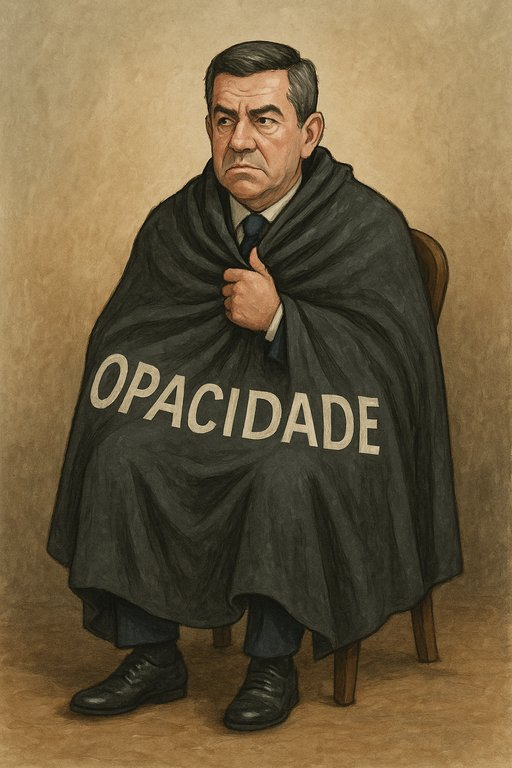

Publicado em 2025-07-01 14:42:05
Luís Montenegro, esse paladino da transparência que prefere as névoas ao sol, decidiu mostrar que a luz não é para todos. Numa demonstração épica de coragem opaca, avançou com pedidos ao Tribunal Constitucional para bloquear a consulta pública das suas declarações de rendimentos.
Porque, sejamos honestos, quem precisa de saber se o primeiro-ministro tem património escondido ou rendimentos exuberantes quando temos promessas vazias e discursos de ocasião para nos distrair?
Esta ópera bufa lusitana ganhou mais um ato: o da recusa em ser escrutinado, como se a função pública fosse um jogo de sombras chinesas, onde o povo assiste, calado, à dança dos interesses e da opacidade.
Ah, Montenegro! O teu manto é espesso, mas o povo começa a vislumbrar os contornos da verdade por entre os rasgões. E se os espelhos forem escassos, a sátira tratará de os pendurar em todas as praças.
Para mais sátiras e lucidez democrática, visite fragmentoscaos.eu